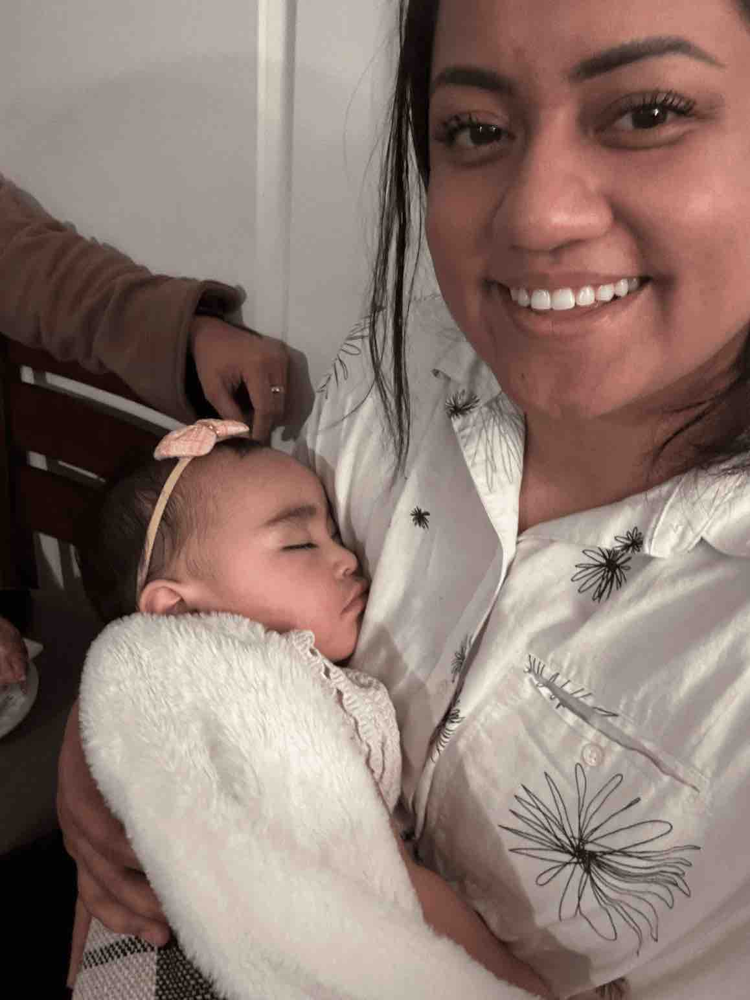

Lilly Niu | WDD130
Hello, my name is Lilly & I am a mother of 2 wonderful kids & a wife to my handsome best friend. I am a medical CNA with 6 years experience in the dental field, an institute graduate & someone who also wanted to dabble into something else. So I chose software development. I love learning & enjoy acquiring skills that help me understand & appreiate the value in things. So here I am, learning how much more a simple web page deserves a little more respect for everything that it takes to actually build one.